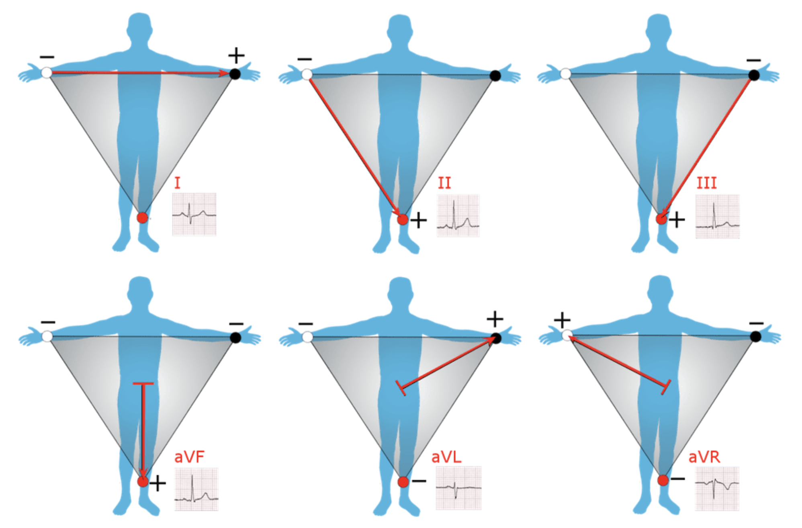
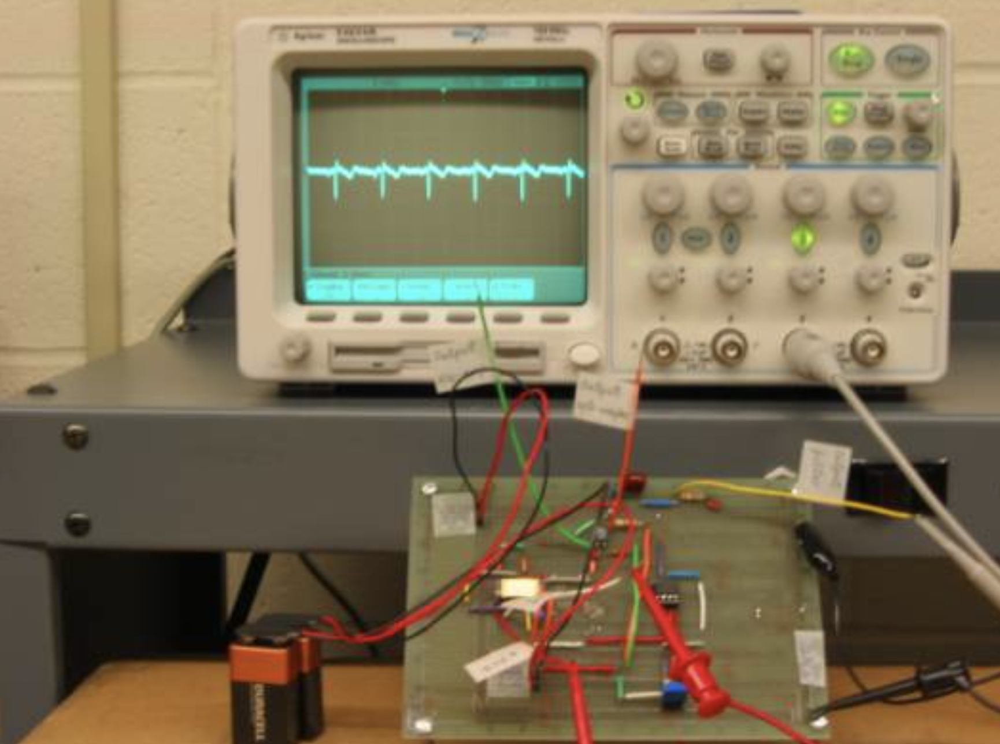
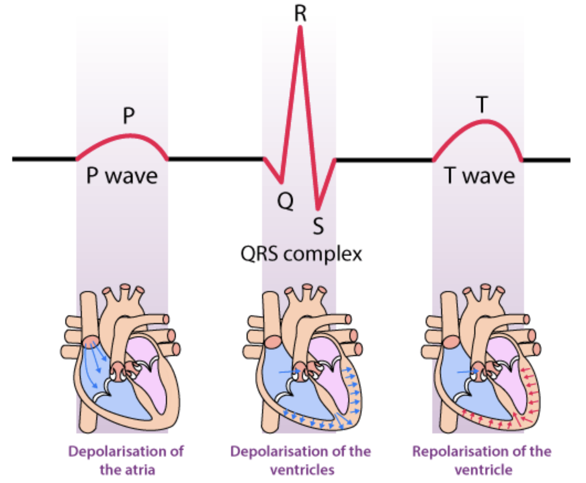
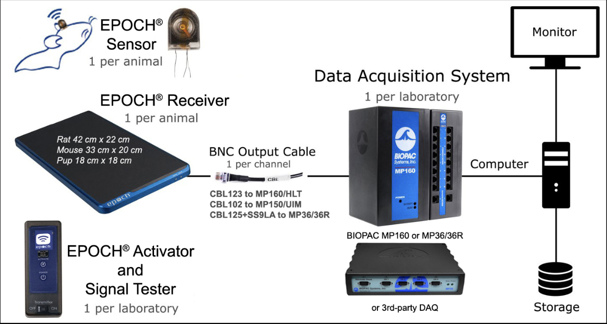

| ECG Lead analysis | ||||
|---|---|---|---|---|
| Peak-to-Peak Values, Frequencies, Time Intervals, and Beats per Minute (BPM) for ECG Leads | ||||
| Lead Number | Peak to Peak | Frequency f (in Hz) | Time (in sec) = 1/f | Beats per Min = 60/T |
| Lead 1 | 0.47 | 1.27 | 0.78 | 76.92 |
| Lead 2 | 0.55 | 1.25 | 0.80 | 75.00 |
| Lead 3 | 0.08 | 1.26 | 0.79 | 75.94 |
| Source: DTE Lab, 4th floor, Dept of Medical Electronics | ||||
3.1 Aim
Aquisition of ECG signal with the help of Power lab and Bio-pac systems.
3.2 Theory
Electrocardiogram records from the body surface and registers the differences in electrical potential generated by the heart. Signal recorded is determined by action potentials generated by millions of individual cells and their sequence of activation. A multitude of factors (both cardiac and extracardiac) alter the final electrical signal. For instance, the electrical forces generated by heart are subsequently altered by the position of the heart within the body, the nature of intervening tissue and the distance to the recording electrode.
Lead 1 = RA, LA, RL
Lead 2 = RA, LL, RL
Lead 3 = LA, LL, RL



3.2.1 Bio-pac system
We aquire ECG signal using the Bio-pac system

3.3 Procedure
- BIOPAC lessons are opened on the PC
- Select
ECG1and click OK. - Electrodes are placed on respective channel (CH:2) according to lead configurations. Transducer used is SS2L and subject should be at rest.
- System is first calibrated and checked for proper contact of electrodes.
- ECG setup is thus simulated, and the readings are recorded for each lead configuration
- After recording the signals, BIOPAC lessons is clicked to save readings, which display the peak to peak voltage.
- L1 + L3 = L2 is thus verified.
3.4 Observation
3.5 Analysis
The Biopac software shows consistent heart rate readings across all leads (75-77 bpm) indicating accurate and stable heart rate rhythm detection.
ECG analysis if the subject is acquired and Lead1 + lead3 = Lead2 was verified. Using frequency of the signal acquired, the bpm was also found.
Lead 1 = 0.47
Lead 3 = 0.08
Lead 2 = 0.47 + 0.08 = 0.55
\(\frac{1}{f} = T = 0.78\) and \(\frac{60}{0.78} = 76.92\)
3.6 Result
The ECG signal was aquired and L1 + L3 = L2 is verified.